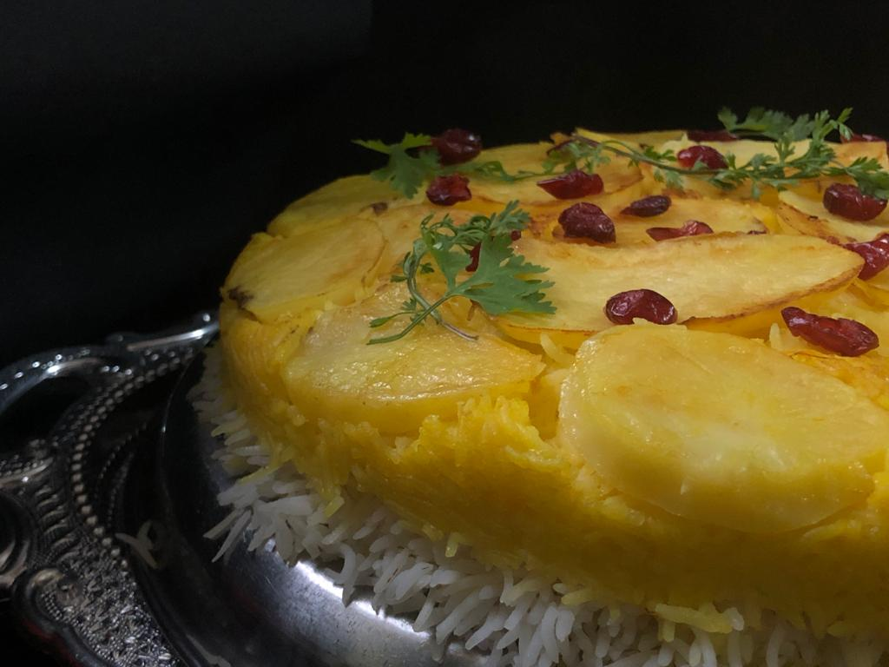

رستورانهای سنتی که باید امتحان کنید
در این سفر، به سه رستوران قدیمی سر زدیم که هنوز غذا را در دیگ مسی و روی آتش هیزم میپزند.

تهچین این رستوران تهدیگ طلایی و ترد دارد و با ماست محلی سرو میشود.
در این سفر، به سه رستوران قدیمی سر زدیم که هنوز غذا را در دیگ مسی و روی آتش هیزم میپزند.

تهچین این رستوران تهدیگ طلایی و ترد دارد و با ماست محلی سرو میشود.